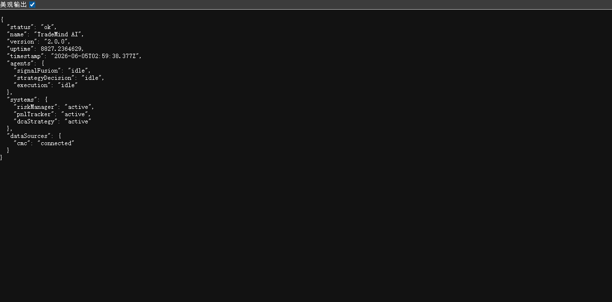
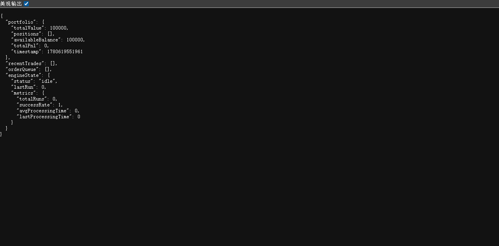
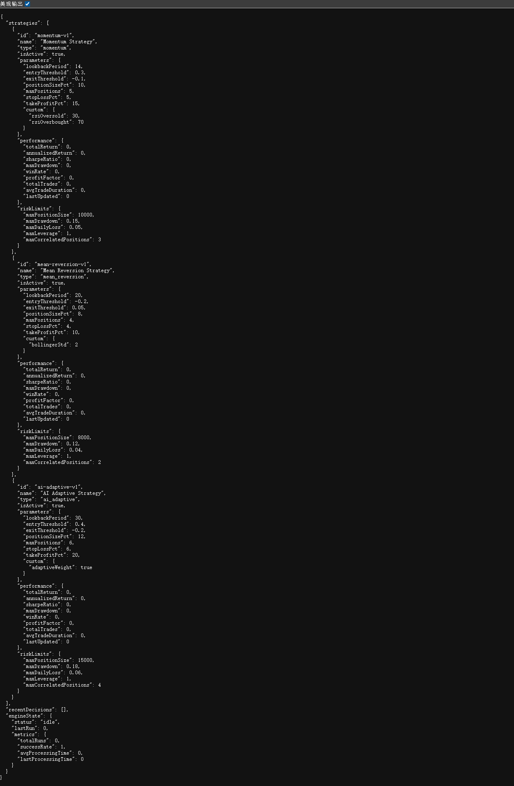
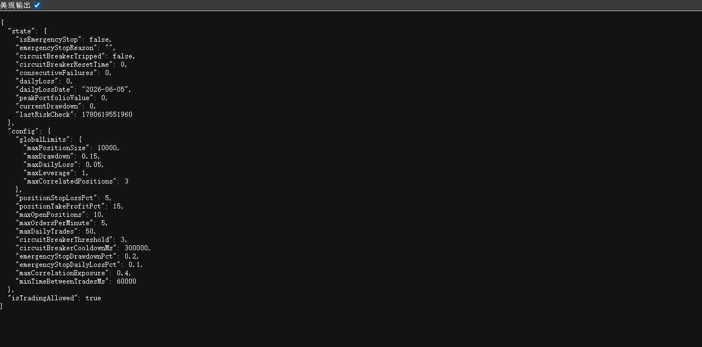
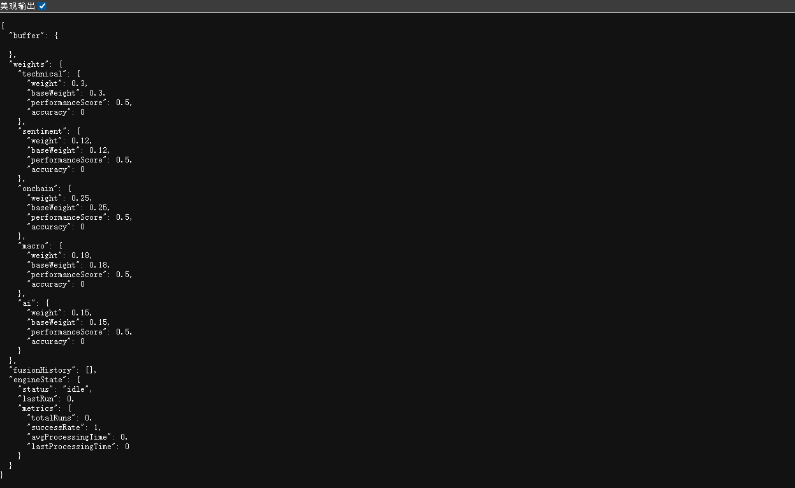

智能收益优化系统 - 系统功能演示
v2.0.0 | TradeMind AIAPI 端点：GET /api/health
此端点展示系统的整体运行状态，包括各代理（Agent）的当前状态、核心系统组件的活跃情况，以及外部数据源的连接状态。

API 端点：GET /api/portfolio
此端点展示投资组合的完整信息，包括总资产价值、持仓明细、可用余额、盈亏状况、最近交易记录、订单队列以及交易引擎状态。

API 端点：GET /api/strategies
此端点展示系统内置的三大交易策略，每个策略包含参数配置、风险限制和绩效指标。系统支持动量策略、均值回归策略和 AI 自适应策略。

API 端点：GET /api/risk
此端点展示风险管理系统的核心配置，包括紧急停止机制、熔断器状态、每日损失限制、最大回撤控制等关键风险参数。

API 端点：GET /api/signals
此端点展示多源信号融合系统的状态，包括各信号类型的权重配置（技术分析、情绪分析、链上数据、宏观经济、AI 预测）以及融合历史记录。
